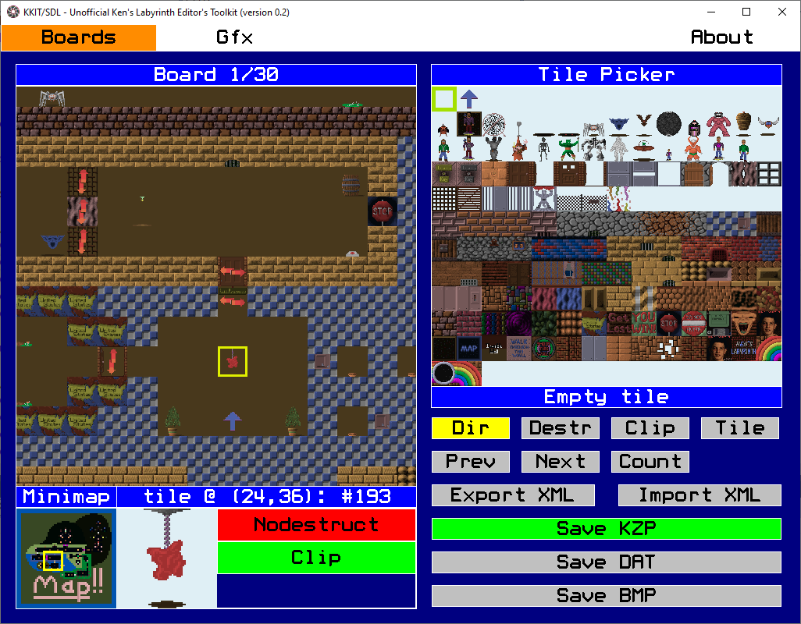
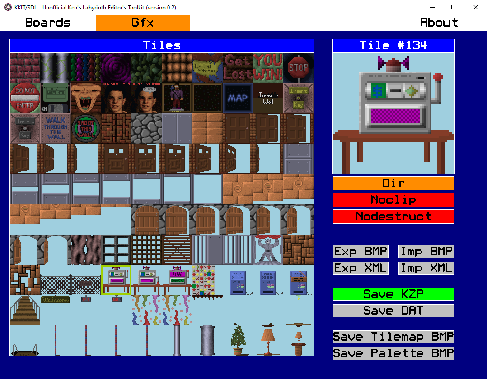
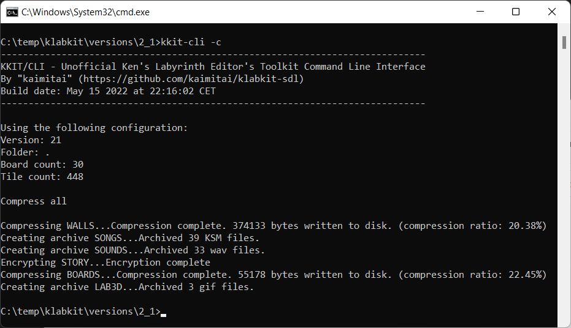

Thank you for checking out the KKIT/SDL editor. With this tool you will be able to create and alter levels for Ken's Labyrinth, as well as modify the majority of the graphics in the game. Check out the various sections of this document for an explanation of the program's functionality.
This editor will let you edit the game data for level boards (BOARDS.KZP/BOARDS.DAT), and tile graphics (WALLS.KZP/WALLS.DAT) used by these levels. Included with the editor are the original versions of these files, and starting the program out of the box will load these files for the full version of Ken's Labyrinth (version 2.1). See the configuration section for how to alter files in other locations.
To play the game, the original executables and full sets of game data can be found on Ken Silverman's official website, but a modern source port is generally recommended whenever possible.
When the editor starts successfully, it will tell you which configuration is loaded, how many boards and tile graphics are loaded into memory - and whether it loaded KZP- or DAT-files.
When opening the editor, the program looks for a file kkit-sdl-config.xml in the same directory as the executable. This is a configuration XML which lets you set, among other things, the following important properties:
- Working directory (where to load/save gamefiles)
- Tile picker layout
The XML root node has an attribute active_configuration which lets you switch between configurations easily. By default this value is 0, which points to the configuration used for Ken's Labyrinth v2.1 which is the most relevant version to modify.
Each configuration points to a project folder, where files will be loaded from and saved to. We support relative paths (relative to the kkit-sdl executable), as well as absolute paths. By default the file points to folders that ship with the editor.
If the configuration file does not exist, we will load a default configuration for v2.1, but with no custom tile picker layout. In this case the project folder will be the same as the folder of the executable.
The configuration is loaded when the program starts, and can not be reloaded during runtime.
Note also that, if the files WALLS.DAT and/or BOARDS.DAT exist in the project folder, these files take precedence over their KZP counterparts when starting up and initializing the program. (see the next sections for saving to DAT)
The first of the three screens in the application is called "Boards". This is where you can edit the levels in BOARDS.KZP. (BOARDS.DAT for v1.x)
The board editor consists of four sub-windows; Board, Tile Picker, Minimap and selected board tile.
The board window shows the loaded board, and makes up the editable area of the screen. The tile picker shows all tiles (from WALLS.KZP) available, and the layout depends on the configuration in kkit-sdl-config.xml
Two tiles will always be selected on this screen; one on the board grid, and one on the tile picker grid. The selected tile sub-window will show the properties of the selected board tile, and the label below the tile picker will show the properties of the selected Tile Picker tile.
The minimap will show which section we're seeing in the board sub-window, out of the whole level. Clicking the minimap will also move the board view.
The selected tile sub-window will show the properties of the selected tile on the board grid, as well as make buttons available for toggling up to three properties; destruct, clip and direction. (direction only available for tiles of type Directional, see Gfx-section for tile metadata)
Destructible tiles can be destroyed by shooting them, and clippable tiles can be walked through. A tile that is both clip and destruct, will typically become clippable after it has been shot once.
Directional tiles can extend from north to south (horizontal) or west to east (horizontal) which can be indicated by arrows in the editor.
Each board has a player start position, and a player start direction - which is indicated by a blue arrow.
The four buttons below the tile picker (Dir, Destr, Clip and Tile) are togglable buttons that will turn on or off indications on the board grid. "Dir" will indicate which way directional tiles span, "Destr" will flash destructible tiles, "Clip" will flash clippable tiles (and empty tiles that are noclip, as monsters cannot move across these!) and "Tile" will flash all tiles of the same type as the currently selected tile picker tile.
The next three buttons (Prev, Next and Count) will perform logic. "Prev" will go to the previous tile of the same type as the selected tile on the board grid, "Next" will go to the next tile. The order in which we iterate over tiles are the same order in which teleports link to each other. Hold Ctrl when using these two buttons to iterate over tiles of the same type as the selected Tile Picker tile type. (if any exist on the board)
The count button will count all tiles of the selected type on the current board. Hold shift to count for all boards, and hold Ctrl to count for the type of the Tile Picker type instead of the selected board tile.
The Export XML button will save the current board as XML, (hold Shift to save all boards) and the Import XML button will load the current board from XML. (hold shift to load all XMLs at once) This is one way to manipulate and share boards individually, and XML is better than binaries for version control among other things.
The "Save KZP" button will write your current levels back to BOARDS.KZP. (if editing a legacy version earlier than v2.0, it will save to BOARDS.DAT instead)
The "Save DAT" button will write your current levels back to BOARDS.DAT, which is an uncompressed version of the KZP. This is required for v1.x levels, but not much use for v2.x.
The "Save BMP" button will save the entire board as a 4096x4096x256 color bmp, just for fun ;)
Mouse functions for board grid:
Left click the board grid to select a tile
Shift + Left click the board grid to make a selection rectangle
Ctrl + Left click the board grid to set the selected tile picker tile to be the clicked board tile ("color picker")
Right click the board grid to "paint", using the Tile Picker type
Mousehweel up and down will scroll the board view up and down
Shift + Mousehweel up and down will scroll the board view left and right
Ctrl + Mousehweel up and down will zoom in and out
Keyboard Shortcuts for board grid: ("cursor" here means the selected board tile)
Ctrl+C - Copy selection to clipboard
Ctrl+V - Paste clipboard at cursor (if clipboard fits)
Ctrl+X - Cut selection
Delete - Clear selection
Shift+V - Show where clipboard would be pasted, if using Ctrl+V (if clipboard fits)
Arrow keys - Move board view (hold Ctrl for faster panning)
B - Toggle cursor destructible property ([B]last)
C - Toggle cursor clip property
D - Toggle cursor direction, if the tile is of type Directional
F - Flip selection around horizontal axis (hold shift to flip around vertical axis)
R - Rotate clipboard counter-clockwise 90 degrees (hold Shift to rotate clockwise)
Ctrl+Plus/Minus - Zoom in and out (centered)
Ctrl+H - Center on player start position
Ctrl+N - Same as the "Next" button
Ctrl+P - Same as the "Prev" button
Ctrl+F - Center the board view on the selected board tile
Ctrl+S - Save KZP (hold Shift to save DAT)
PgUp/PgDown - Go to next/prev board
Home/End - Go to first/last board
Mouse and keyboard functions for Tile Picker:
Left click the tile picker to select a tile
Mousehweel up and down will scroll the tile picker up and down (hold Ctrl for faster scrolling)
Shift + PgUp/PgDown - Move tile picker one "screen" up or down
Shift + Home/End - Move to start/end of tile picker
The second of the three screens is called "Gfx". This is where you edit the game graphics stored in WALLS.KZP.
On the left is the list of available tiles, and on the right we see the selected tile and its metadata.
The buttons under the tile preview will let you toggle the metadata of the tile in the following order:
- Tile type: Block, Plane or Directional
- Clip or not
- Destrutible or not
The block types behave as follows:
- Block: The tile faces in 4 directions on the edges of the board cell it occupies. Example: walls
- Directional: The tile makes up one plane spanning in the n-s or e-w direction (the direction is determined by the concrete instantiation on a board) Example: doors
- Plane: The tile makes up one plane that always faces the player. Example: Barrels, tables, pick-up items and powerups
The other properties - clip and destructible - only give these default properties of the tile. The instantiations on a board can override them.
Keep in mind also that certain blocks have special meaning which is hard-coded in the game, so change tile metadata with caution.
Buttons:
- Exp BMP: Save selected tile graphics as BMP (hold shift to save all tiles as BMPs)
- Imp BMP: Load tile graphics from BMPs (hold shift to import all BMPs)
- Exp XML: Save selected tile, including metadata, as XML (hold shift to save all)
- Imp XML: Load tile from XML (hold shift to load all XMLs)
- Save KZP: Save tiles to WALLS.KZP
- Save DAT: Save tiles to WALLS.DAT, an uncompressed version of the KZP. (not necessarily useful)
The exported BMPs will be 256-color images with the palette used by the game. When altering graphics, try to use a graphics editor that does not change the palette of the image, as the colors cannot be changed anyway. When a BMP is imported, the editor does a nearest-color scheme to translate the BMP palette into the game palette. (Windows Paint, for example, in my experience, is not good at preserving the palette, and does not yield good results)
The rgb-value indicating transparency is (204, 92, 112)
The XMLs for boards store the tiles row by row, left to right. The player start direction and position are stored in the header. The name of the configuration is written to the header as attribute "lab3d_version", as a hint to users which version of Ken's Labyrinth the board is meant for.
The XMLs for tile graphics store the pixels (palette indexes) row by row, left to right. The metadata - tile type, destructible and clip - are stored in the header. The name of the configuration is written to the header as attribute "lab3d_version", as a hint to users which version of Ken's Labyrinth the tile graphics is meant for.
The configuration xml - kkit-sdl-config.xml - holds project configurations. The header holds the following attributes:
- app_version: The version of the editor. Preparing for backward-compatibility in case we decide to change the format in a future release
- active_config_no: The concrete configuration that will be loaded on program start. This is the only value in the header that should be changed by users.
For each configuration block, the following attributes are stored in the header:
- no: The number of the configuration. This should be unique per configuration, and one of them should match the value of active_config_no in the XML root node
- label: Just a name for the configuration. This value will be written to header of output XMLs for boards and walls, as a hint to users. No program logic depends on this.
- project_directory: The folder for the game files we are editing. Can be a relative or absolute path.
- board_count/wall_count: The number of boards and walls that will be written to the file header. For version 2.0 the board count differs from the actual number of boards for technical reasons. (the KZP header has 30 entries, whereof 20 are ignored)
- lzw_header_type: A value of 1 means we write v1.x-type KZP files. A value of 0 means we write Walken-type files, and any other number means version 2.x.
Only the attribute project_directory should be changed by users. Advanced users may change board and wall counts if implementing a port of the game that does not use hard-coded values for these.
For each configuration we can define a tile picker, the order in which tiles should appear when editing boards. Values not defined here will be put at the end of the tile picker automatically when the configuration has been loaded.
For each configuration we can also define a clip override; a list of tiles which will flash as clippable on the board grid, even if the clip property does not override the metadata of the tile.
Included in the release is a command-line executable, kkit-cli.exe. This is a tool which will compress/decompress the rest of the data files, and not only WALLS and BOARDS which can be edited directly in KKIT/SDL. The tool supports all official versions, including Walken. In reality, only tile graphics and boards can really be compressed. For STORY.KZP the tool will encrypt/decrypt, and for the rest of the files the tool will archive/extract files.
The cli tool will take switches and argument values. These are:
- -c: compress, can take one optional parameter of which file to write to. If not given, will compress all
- -d: compress, can take one optional parameter of which file to read from. If not given, will decompress all.
- -v: version. Values are 21, 20, 11, 10 and 0 for Walken. Will use 21 if not given.
- -f: data file folder. If the path contains spaces, enclose the argument value in quotes. (will use current directory by default)
- -b -w: board and wall count. For advanced users. Will only need to be given if your values differ from the ones used in the actual games. Otherwise these will be deduced based on the version.
The following KZP files are subject to compression/decompression
All versions
- WALLS - The graphics data. Will read from WALLS.DAT and output WALLS.KZP (-c) or vice versa.
Versions 1.x and up
- SONGS - the game music. Will extract all to a folder KSM (-d) or write all KSM files to SONGS.KZP (-c). The filenames are part of the archive header, and will be written in alphabetical order. This holds true for all versions apart from 2.0, but the order does not seem to matter - likely the game is using the filename as a key when loading music. To actually edit the music files, there is an editor available on Ken Silverman's webpage, along with technical documentation of the KSM format. Note that the filenames, excluding extenstion, cannot be more than 8 characters.
- SOUNDS - the sound effects. Will extract all to a folder wav (-d) or write all wav files to SOUNDS.KZP (-c). The wav files should be 8-bit mono sounds, and they should be under 32K.
- STORY - The game story text. Will decrypt STORY.KZP to STORY.DAT, or encrypt in the other direction. The text here contains special characters that might signify colors or alignment. Experiment to find out. :)
Versions 2.x
- BOARDS - The game boards. Will compress BOARDS.DAT and output BOARDS.KZP, or vice versa.
- LAB3D - Extra graphics. Will archive gifs to LAB3D.KZP, or vice versa. The gifs should be of type GIF87a, but these cannot easily be changed. The original game uses hardcoded offsets to find the frames of the archive. A source port could find these offsets dynamically easily enough though, but I am not sure if any actually do.
Examples:
To decompress STORY.KZP to STORY.DAT for version 1.1, with game files in folder c:\ken3d 1.1:
kkit-cli -d story -v 11 -f "c:\ken3d 1.1"
To compress all data into KZP files for v2.1 in the current directory:
kkit-cli -c

If you decompress all the KZP files for any version, and then compress them back - you should get a result identical to what you started with. The known exception is SONGS.KZP, where the files are not stored in alphabetical order for v2.0. In addition, 9 bytes are reserved per file in the header. (8 bytes for the filename, and 1 byte for the null-terminator) Some KSM filenames are shorter - which leaves a couple of unused bytes. In the official version, where possible, unused bytes are set, unsurprisingly, to the signature KS. ;) The compressor will simply set extra unused header bytes to 0.
It is expected that users of KKIT/SDL will work on editing the game assets for Ken's Labyrinth v2.1, and for this reason this is what we focus on supporting. The file formats for graphics and boards work in the same way for all official versions though, so we try to support all of them for the sake of completeness. It is also for completeness' sake we have decided to support editing boards and graphics of the technical demo Walken. The formats here differ a bit from the official versions, so we have introduced something of a hack for this purpose. The GUI will look the same, but those who are interested in editing Walken need to know the following:
- Tile metadata do not support tile type Direction, only Cube and Plane. When writing WALLS.KZP or WALLS.DAT, walls of type Directional will become Cube.
- Tile metadata does not have the concept destructible, and neither do board tile instantiations. When saving WALLS or BOARDS, the destructible-property will be ignored.
- The board tiles automatically inherit the clip-property of the tile metadata, if the tile metadata says it is a noclip-tile. It is possible to override the clip-property of a wall tile, but only if you turn it on, not off.
Since it is not possible to turn off the tile metadata property clip, we set the noclip property automatically when loading a board for these tiles - since we may want them to flash as noclip tiles. (it can be handled more properly of course, but it would require a bigger change to the editor code) There is only one such example in the "official" Walken BOARDS.DAT-file (a "Walk through this wall"-tile on board 10 has the clip property set explicitly, even when the tile metadata already says it should be noclip) but this results in a 1-byte difference between input and output when saving the "defualt" level set. As far as we know this has no practical consequence. We consider explicit noclip-setting redundant configuration for noclip-tiles, and will keep it this way in our logic since it makes the editor easier to work with.
Ken Silverman for creating Ken's Labyrinth and making the source code for the game and the tools available.
Jan Lönnberg for creating LAB3D/SDL, a modern port of the game
Katie Stafford for creating an enhanced version of LAB3D/SDL - hers is the version I used the most in my testing
Apart from fixing bugs as they are discovered, the following ideas are possible extensions in the future:
- Show more informational and error messages in the application
- Ability to see the board map tile in the editor
- Add support for editing highscore and savegame files
- Clean up the code, and reduce wasted cycles :)
If the program does not start at all, check the file kkit-sdl-err.log which will be created when an unhandled exception occurs. Usually this will be due to an invalid input file (WALLS.KZP/BOARDS.KZP/*.xml), or invalid project_directory in the config xml. Loading a 2.x-board xml into a 1.x-project will cause problems too, as 2.x has more tiles available than 1.x.
If Windows gives you a message that the program cannot be started, make sure you have the x64 Visual C++ Redistributables. This should be part of most Windows installations by default, but can also be found at Microsoft Support Visual C++ downloads.
If the edited graphics look terrible, or lose transparency - try to use a graphics editor that does not change the palette of the image.
Section to be created...
For feedback, suggestions, bug reports and questions, the author (Kai E. Frøland aka "kaimitai") can be reached via email, Threema or GitHub.